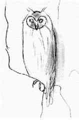

L
i n u x P a r
k
при
поддержке ВебКлуба |
Глава 12 Программы обеспечения безопасности (Целостность системы) -
Tripwire ASR 1.3.1В этой главе
Linux Tripwire
2.2.1
Конфигурации
Организация
защиты Tripwire для Linux
Команды
Linux Tripwire
ASR 1.3.1
Конфигурации
Организация
защиты Tripwire
Команды
|
 |
Tripwire ASR 1.3.1 это “Academic Source Release (ASR)”
программы Tripwire. Лично я предпочитаю версию 1.3.1 версии 2.2.1, так как она
может быть скомпилирована и инсталлирована без каких-либо проблем с
совместимостью на всех версиях Linux
В задачах Tripwire ASR написано:
С появлением все более и более сложных и тонких способов
проникновений в систему UNIX, возникает необходимость в утилитах, помогающих
обнаружить неправомочные модификации файлов. Tripwire – это утилита, которая
помогает администраторам и пользователям контролировать обозначенный набор
файлов на предмет любых изменений. Используемая на регулярной основе (например,
ежедневно), Tripwire может предупредить администраторов о нарушении или
разрушении файлов, так чтобы меры были предприняты в кратчайшие сроки.
Tripwire – это программа для проверки целостности файлов и
каталогов, утилита которая сравнивает обозначенный набор файлов и каталогов с
информацией о них, сохраненной в базе данных, сформированной ранее. Помечаются и
регистрируются любые изменения, в том числе добавление или удаление элементов.
Системный администратор может заключить с высокой степенью уверенности, что
требуемый набор файлов не был подвержен неправомочным модификациям, если
Tripwire не сообщала об изменениях.
Эти инструкции предполагают.
Unix-совместимые
команды.
Путь к исходным кодам “/var/tmp” (возможны другие
варианты).
Инсталляция была проверена на Red Hat Linux 6.1 и 6.2.
Все шаги
инсталляции осуществляются суперпользователем “root”.
Tripwire версии
1.3.1-1
Пакеты.
Домашняя страница Tripwire: http://www.tripwiresecurity.com/
Вы должны скачать:
Tripwire-1.3.1-1.tar.gz
Тарболы.
Хорошей идеей будет создать список файлов установленных в вашей
системе до инсталляции Tripwire и после, в результате, с помощью утилиты diff вы
сможете узнать какие файлы были установлены. Например,
До инсталляции:
find /* >
Tripwire1
После инсталляции:
find /* >
Tripwire2
Для получения списка установленных файлов:
diff Tripwire1 Tripwire2 >
Tripwire-Installed
Раскройте тарбол:
[root@deep /]#
cp Tripwire-version.tar.gz /var/tmp
[root@deep /]# cd /var/tmp
[root@deep
tmp]# tar xzpf Tripwire-version.tar.gz
Компиляция и оптимизация.
Редактируйте файл utils.c (vi +462 src/utils.c) и измените
следующую строку:
else if (iscntrl(*pcin))
{
Должна читаться:
else if (!(*pcin
& 0x80) && iscntrl(*pcin)) {
Редактируйте файл config.parse.c file (vi +356
src/config.parse.c) и измените следующую строку:
rewind(fpout);
Должна
читаться:
else
{
rewind(fpin);
}
Редактируйте файл config.h (vi +106 include/config.h) и
измените следующие строки:
#define CONFIG_PATH
"/usr/local/bin/tw"
#define DATABASE_PATH "/var/tripwire"
Должны
читаться:
#define CONFIG_PATH "/etc"
#define
DATABASE_PATH "/var/spool/tripwire"
Редактируйте файл config.h (vi +165 include/config.h) и
измените следующую строку:
#define TEMPFILE_TEMPLATE
"/tmp/twzXXXXXX"
Должна читаться:
#define TEMPFILE_TEMPLATE "/var/tmp/.twzXXXXXX"
Редактируйте файл config.pre.y (vi +66 src/config.pre.y) и
измените следующую строку:
#ifdef TW_LINUX
Должна
читаться:
#ifdef TW_LINUX_UNDEF
Редактируйте файл Makefile (vi +13 Makefile) и измените
следующие строки:
DESTDIR =
/usr/local/bin/tw
Должна читаться:
DESTDIR = /usr/sbin
DATADIR =
/var/tripwire
Должна читаться:
DATADIR
= /var/spool/tripwire
LEX = lex
Должна
читаться:
LEX = flex
CC=gcc
Должна
читаться:
CC=egcs
CFLAGS = -O
Должна
читаться:
CFLAGS = -O9 -funroll-loops -ffast-math
-malign-double -mcpu=pentiumpro -march=pentiumpro -fomit-frame-pointer
-fno-exceptions
[root@deep
tw_ASR_1.3.1_src]# make
[root@deep tw_ASR_1.3.1_src]# make
install
[root@deep tw_ASR_1.3.1_src]# chmod 700
/var/spool/tripwire/
[root@deep tw_ASR_1.3.1_src]# chmod 500
/usr/sbin/tripwire
[root@deep tw_ASR_1.3.1_src]# chmod 500
/usr/sbin/siggen
[root@deep tw_ASR_1.3.1_src]# rm -f
/usr/sbin/tw.config
Команды “make” и “make install” настаивают программное
обеспечение, чтобы удостовериться, что ваша система имеет необходимые
возможности и библиотеки для успешной компиляции пакета, компилируют все
исходные файлы в исполняемые, и затем инсталлирует их и сопутствующие им файлы в
определенное место.
Команда “chmod” изменяет права доступа по умолчанию к каталогу
“tripwire” на 700 (drwx------), чтение, запись и исполнение только для
пользователя “root”. И изменяет права доступа на чтение и исполнение только
пользователем root (- r-x------) для программ “/usr/sbin/tripwire” и
“/usr/sbin/siggen”. Команда “rm” используется для удаления файла “tw.config”
расположенного в “/usr/sbin”. Нам этот файл не нужен, так как мы создадим
подобный новый файл позже в каталоге “/etc”.
Очистка после
работы.[root@deep /]# cd
/var/tmp
[root@deep tmp]# rm -rf tw_ASR_version/
Tripwire-version.tar.gz
Команда “rm”, использованная выше, будет удалять все исходные
коды, которые мы использовали при компиляции и инсталляции Tripwire. Она также
удалит .tar.gz архив.
Все программное обеспечение, описанное в книге, имеет
определенный каталог и подкаталог в архиве “floppy.tgz”, включающей все
конфигурационные файлы для всех программ. Если вы скачаете этот файл, то вам не
нужно будет вручную воспроизводить файлы из книги, чтобы создать свои файлы
конфигурации. Скопируйте файл из архива и измените его под свои требования.
Затем поместите его в соответствующее место на сервере, так как это показано
ниже. Файл с конфигурациями вы можете скачать с адреса:
http://www.openna.com/books/floppy.tgz
Для запуска Tripwire следующие файлы должны быть созданы или
скопированы в нужный каталог:
Копируйте файл tw.config в “/etc”.
Копируйте скрипт
tripwire.verify в каталог “/etc/cron.daily”.
Вы можете взять эти файлы из нашего архива floppy.tgz.
Настройка файла “/etc/tw.config”
“/etc/tw.config” это конфигурационный файл для Tripwire, в
котором определяется какие файл и каталоги должны контролироваться. Обратите
внимание, что при редактировании этого файла необходимы обширные испытания и
опыты, прежде чем удастся получить работающие файлы отчетов. Следующий
работающий пример вы можете использовать, как стартовую площадку для ваших
настроек.
Шаг 1.
Создайте файл tw.config (touch /etc/tw.config) и добавьте в
него все файлы и каталоги, которые вы хотите контролировать. Формат
конфигурационного файла описан в его заголовке и в странице руководства (man)
для tw.config (5):
# Gerhard Mourani: [email protected]
# last updated: 1999/11/12
# Первое, домашний каталог root-а
/root R
!/root/.bash_history
/ R
# это ядро
/boot/vmlinuz R
# критичные файлы загрузки
/boot R
# Критичные каталоги и файлы
/chroot R
/etc R
/etc/inetd.conf R
/etc/nsswitch.conf R
/etc/rc.d R
/etc/mtab L
/etc/motd L
/etc/group R
/etc/passwd L
# другие популярные файловые системы
/usr R
/usr/local R
/dev L-am
/usr/etc R
# исключаем home
=/home R
# каталог var
=/var/spool L
/var/log L
/var/lib L
/var/spool/cron L
!/var/lock
# особые каталоги
=/proc E
=/tmp
=/mnt/cdrom
=/mnt/floppy
Шаг 2.
Сейчас, из соображений безопасности, изменим режим доступа к
этому файлу:
[root@deep /]# chmod 600
/etc/tw.config
Конфигурирование скрипта “/etc/cron.daily/tripwire.verify”.
“/etc/cron.daily/tripwire.verify” это небольшой скрипт,
запускаемый crond-ом на вашем сервере каждый день, для сканирования жесткого
диска на предмет возможных изменений в файлах и каталогах и отправки результатов
по электронной почте системному администратору. Этот скрипт автоматически
выполнит проверку целостности файловой системы. Если вы хотите автоматизировать
эту задачу выполните шаги, описанные ниже.
Шаг 1.
Создайте скрипт tripwire.verify (touch
/etc/cron.daily/tripwire.verify) и добавьте в него:
#!/bin/sh
/usr/sbin/tripwire -loosedir -q | (cat <<EOF
Это отчет о возможных изменениях в целостности файловой системы,
Автоматически созданный программой Tripwire. Чтобы сообщить Tripwire
Что файлы и содержимое каталогов верно, выполните как root следующую
команду:
/usr/sbin/tripwire -update [pathname|entry]
Если вы хотите войти в интерактивный режим проверки целостности и
контроля сессии, выполните как root:
/usr/sbin/tripwire -interactive
Измененные файлы/каталоги включают:
EOF
cat
) | /bin/mail -s "Отчет о целостности файлов" root
Шаг 2
Сейчас, сделайте скрипт исполняемым и измените режим доступа к
нему на 0700 следующей командой:
[root@deep /]#
chmod 700 /etc/cron.daily/tripwire.verify
Рекомендуется, из соображений безопасности, переместить базы
данных Tripwire (tw.db_[hostname]) в какое-либо место (например, на дискету),
где они не могут быть модифицированы. Это важно, потому что данные Tripwire
заслуживают такого же доверия, что и ее базы данных. Также рекомендуется сделать
сразу распечатку базы данных. Если вы начнете подозревать, что целостность вашей
базы данных нарушена, то сможете вручную проверить ее.
Дополнительная документация.
Для получения большей информации вы можете прочитать страницы
руководства (man) перечисленные ниже.
$ man siggen (8) – генератор сигнатур программ для
Tripwire
$ man tripwire (8) – программа проверки целостности файлов для
UNIX
$ man tw.config (5) – конфигурационный фал для Tripwire
Ниже приведены команды из тех, что мы часто используем в
регулярной работе, но из существует много больше. Читайте страницы руководства
(man) для получения большей информации.
Запуск Tripwire в
интерактивном режиме проверки.
В “Интерактивном режиме проверки” Tripwire проверяет файлы и
каталоги, выясняя какие были добавлены, удалены или изменены, сравнивая их со
своей базой данных, а затем спрашивает у администратора, какие элементы базы
данных должны быть обновлены. Это наиболее удобный путь поддерживать базу данных
в актуальном состоянии, но он требует наличия администратора за консолью. Если
вы хотите использовать этот режим, то следуйте шагам приведенным ниже.
Шаг
1.
Tripwire должна иметь базу данных, сравнивая с которой в
дальнейшем файловую систему она сможет определить изменения. Первым нашим
действием будет создание файла, называемого “tw.db_[hostname]” в каталоге,
который вы определили для хранения базы данных ([hostname] будет заменен на имя
вашей машины).
Для создания информационной базы данных Tripwire, используйте
команду:
[root@deep /]# cd
/var/spool/tripwire/
[root@deep tripwire]# /usr/sbin/tripwire
--initialize
Мы переходим в каталог, который определили для хранения баз
данных, и затем создаем информационную базу данных, которая используется для
всех последующих проверок целостности.
Шаг 2
Так как файл с информационной базой данных Tripwire был создан,
мы можем сейчас запустить Tripwire в “Интерактивном режиме проверки”. Этот режим
будет запрашивать пользователя относительно того, действительно ли каждый
измененный элемент системы должен быть обновлен в базе данных.
Для запуска Интерактивного режима проверки используйте
команду:
[root@deep /]# cd
/var/spool/tripwire/database/
[root@deep database]# cp tw.db_myserverhostname
/var/spool/tripwire/
[root@deep database]# cd ..
[root@deep tripwire]#
/usr/sbin/tripwire --interactive
Tripwire(tm) ASR (Academic Source Release)
1.3.1
File Integrity Assessment Software
(c) 1992, Purdue Research
Foundation, (c) 1997, 1999 Tripwire
Security Systems, Inc. All Rights
Reserved. Use Restricted to
Authorized Licensees.
### Phase 1: Reading
configuration file
### Phase 2: Generating file list
### Phase 3: Creating
file information database
### Phase 4: Searching for
inconsistencies
###
### Total files scanned: 15722
### Files added:
34
### Files deleted: 42
### Files changed: 321
###
### Total file
violations: 397
###
added: -rwx------ root 22706 Dec 31 06:25:02 1999
/root/tmp/firewall
---> File: '/root/tmp/firewall'
---> Update
entry? [YN(y)nh?]
ЗАМЕЧАНИЕ. В интерактивном режиме Tripwire будет
сообщать обо всех добавленных, удаленных и измененных файлах, затем позволяя
пользователю обновить базу данных.
Запуск Tripwire в режиме
обновления базы данных.
Выполнение Tripwire в “Режиме обновления базы данных” совместно
со скриптом “tripwire.verify”, который отправляет результаты системному
администратору, будет сокращать время сканирования системы. Вместо запуска
Tripwire в “Интерактивном режиме проверки” и ожидания завершения долгого
сканирования, скрипт “tripwire.verify” будет сканировать систему и сообщать по
электронной почте о результатах, а затем вы запускаете Tripwire в “Режиме
обновления базы данных ” и обновляете только единичные файлы и каталоги, которые
были изменены.
Например:
Если один файл был изменен, вы можете:
[root@deep /]# tripwire -update /etc/newly.installed.file
Или, если был изменен набор файлов и каталогов, вы можете
выполнить:
[root@deep /]# tripwire -update
/usr/lib/Package_Dir В
любом случае, Tripwire пересоздает элементы базы данных для
каждого заданного файла. Резервная копия старой базы создается в
каталоге“./databases”.
Некоторые возможные места использования Tripwire
Tripwire может быть использован для:
- Проверки целостности файловой системы.
- Получения списка новых инсталлированных или удаленных файлов в вашей
системе.
Инсталлированные файлы.
> /etc/cron.daily/tripwire.verify
> /etc/tw.config
> /usr/man/man5/tw.config.5
> /usr/man/man8/siggen.8
> /usr/man/man8/tripwire.8
> /usr/sbin/tripwire
> /usr/sbin/siggen
> /var/spool/tripwire
> /var/spool/tripwire/tw.db_TEST
Альтернативы Tripwire
ViperDBДомашняя страница ViperDB: http://www.resentment.org/projects/viperdb/
FCHECKДомашняя
страница FCHECK: http://sites.netscape.net/fcheck/fcheck.html
SentinelДомашняя
страница Sentinel: http://zurk.netpedia.net/zfile.html